Transverse-Field Ising Chain
Construct dense qubit-space matrices with nearest-neighbor
ZZ coupling, transverse fields, longitudinal fields,
and next-nearest-neighbor Ising variants.
Exact diagonalization and quantum simulation testbeds
A lightweight, package-first Python library for constructing, analyzing, plotting, and exporting small lattice Hamiltonians used in physics workflows and quantum algorithm research prototypes.


Implemented models
The package keeps model construction, spectra, observables, plotting,
and export helpers in importable modules under
src/quantum_lattice_models/.
Construct dense qubit-space matrices with nearest-neighbor
ZZ coupling, transverse fields, longitudinal fields,
and next-nearest-neighbor Ising variants.
Build two-leg spin ladders with independent leg and rung couplings for compact quasi-one-dimensional benchmarks.
Use truncated Bose-Hubbard chains and spinful Fermi-Hubbard occupation-basis Hamiltonians for small interacting lattices.
Build XX, YY, and ZZ
coupled spin chains with optional longitudinal field terms.
Use compact spin-chain builders for anisotropic exchange, transverse fields, and XXZ Heisenberg specializations.
Add next-nearest-neighbor Heisenberg interactions for a small frustrated spin-chain benchmark.
Study SSH, Rice-Mele, and Kitaev-chain single-particle or BdG matrices for compact topological-chain examples.
Create one-dimensional single-particle hopping matrices with scalar or site-resolved onsite potentials.
Build Harper-Hofstadter square lattices, Haldane honeycomb models, triangular lattices, kagome lattices, and AAH chains.
Published package
Runtime dependencies are intentionally small: numpy,
scipy, and matplotlib. PennyLane export
is optional.
Use the published package for examples, notebooks, and scripts.
pip install quantum-lattice-models
PyPI
Use editable mode when developing the package or running tests.
python -m pip install -e ".[dev]"
Source
Convert dense Hamiltonians into PennyLane-compatible terms.
python -m pip install -e ".[pennylane]"
Quickstart
Quickstart
from quantum_lattice_models.models import transverse_field_ising
from quantum_lattice_models.spectra import ground_energy, spectral_gap
H = transverse_field_ising(n_sites=4, j=1.0, h=0.5, periodic=False)
print(H.shape)
print(ground_energy(H))
print(spectral_gap(H))Generated examples
Each script under examples/ imports the package and saves
a PNG under images/, keeping notebooks and scripts as
thin clients of the public API.
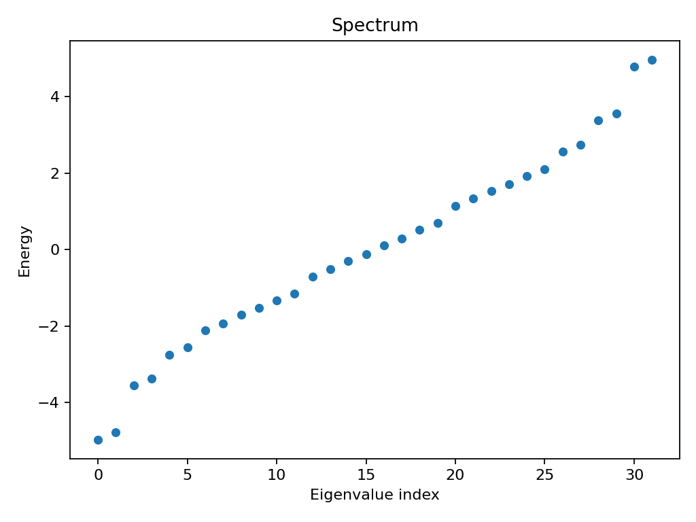
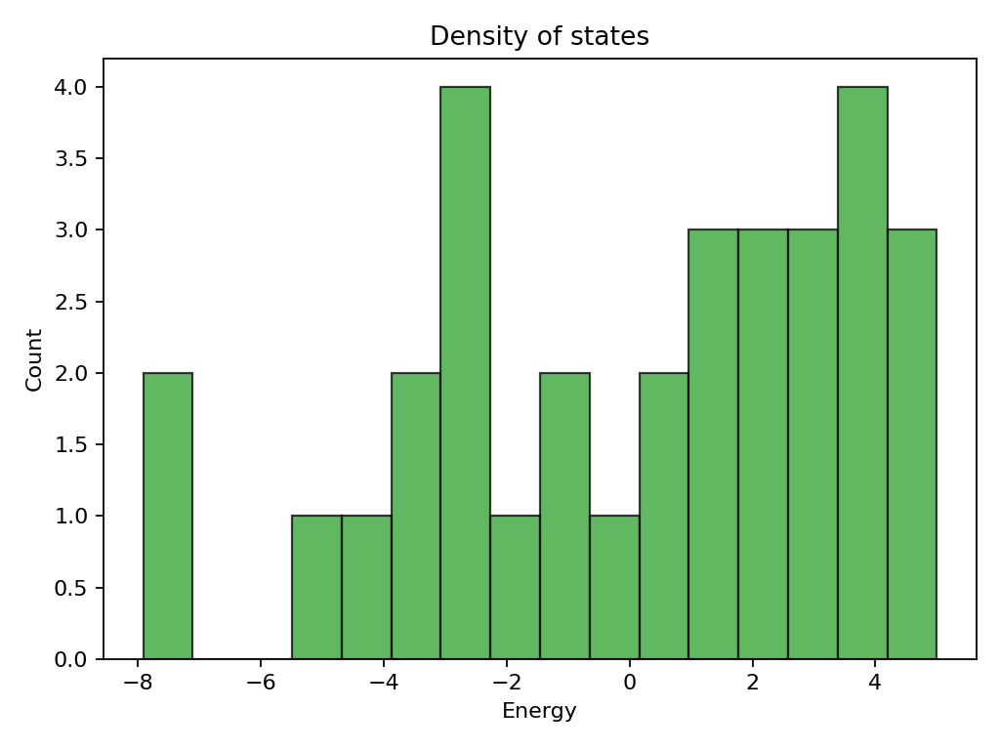
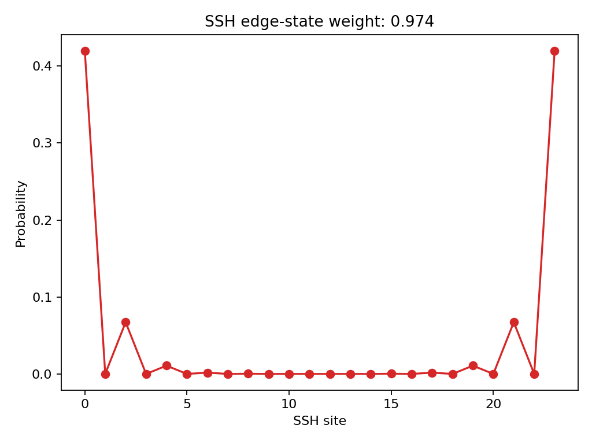
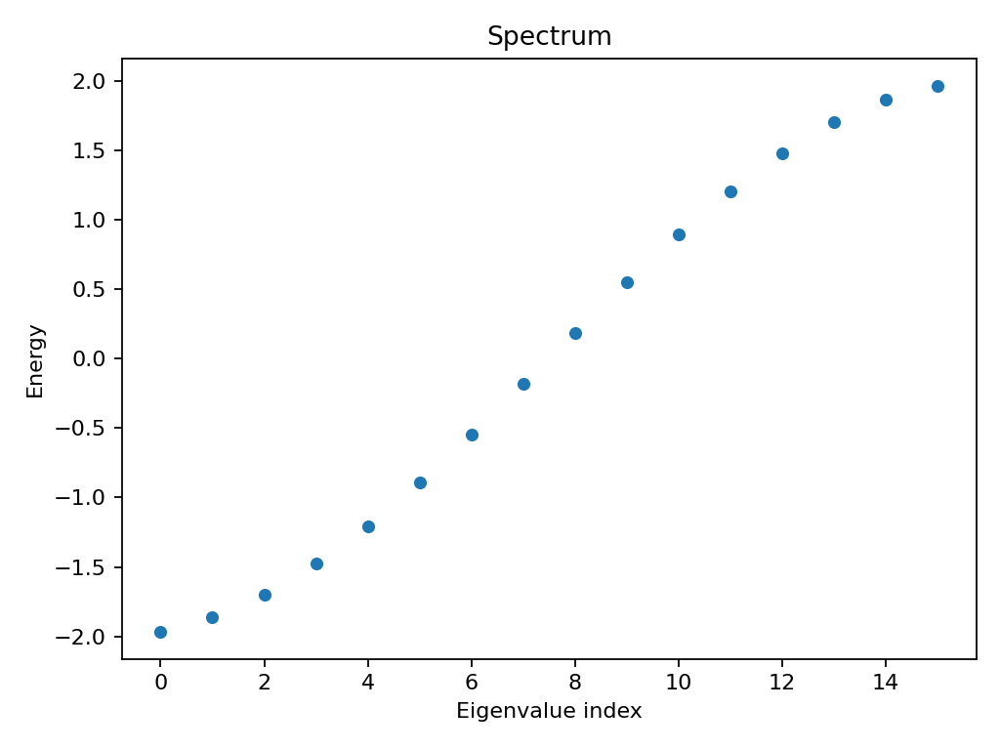
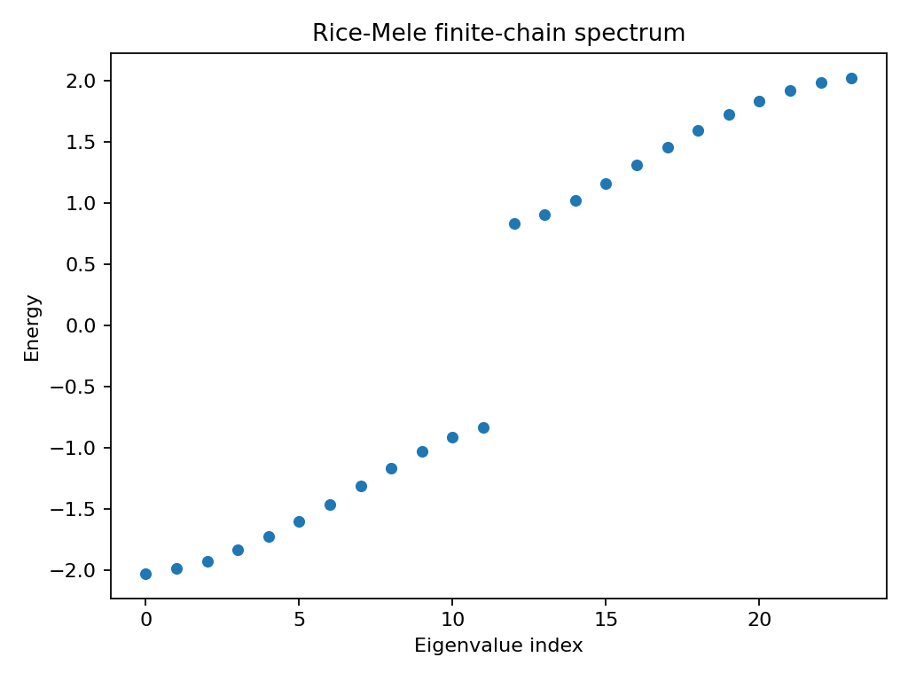
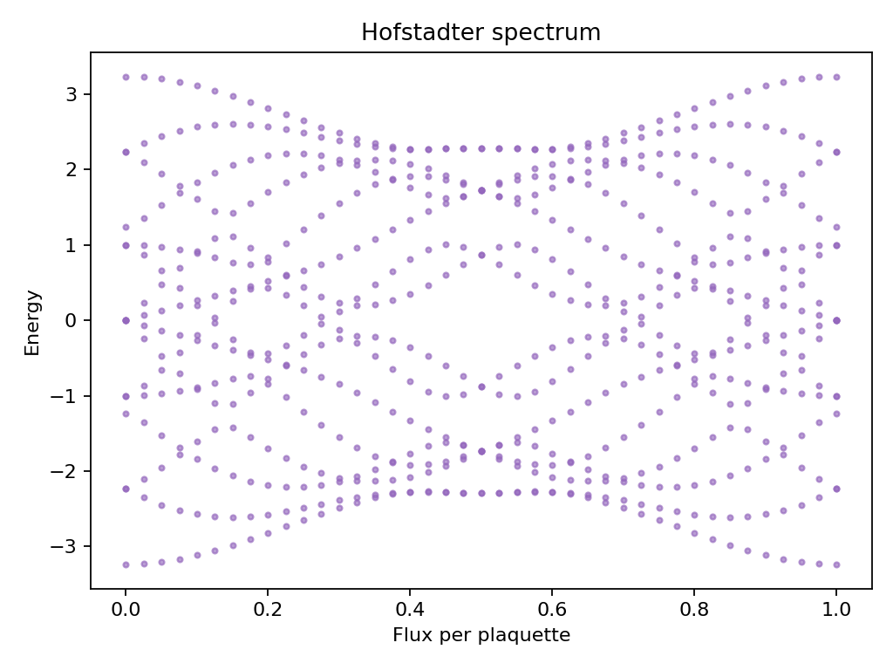
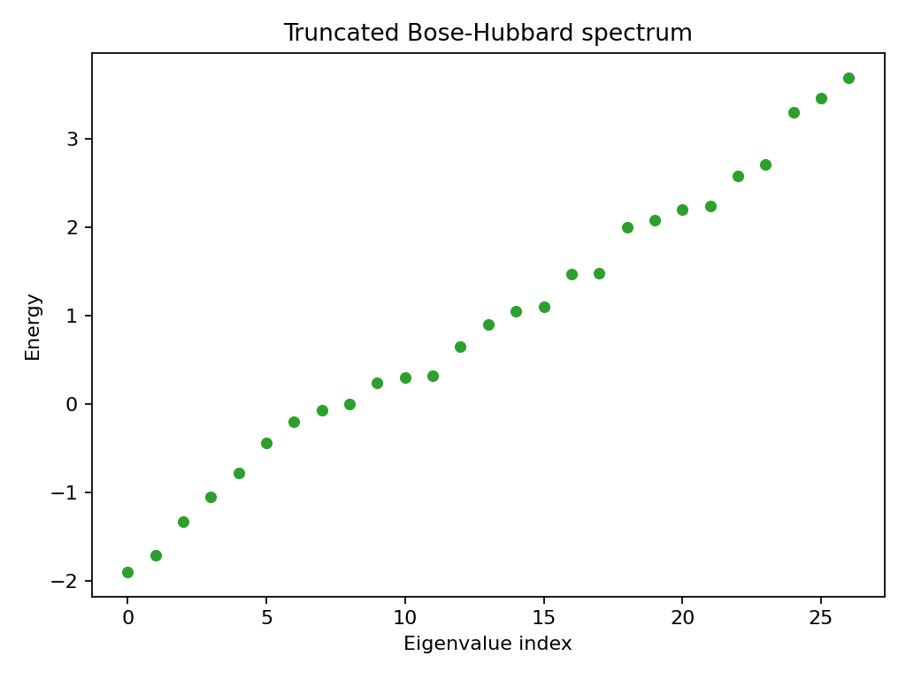
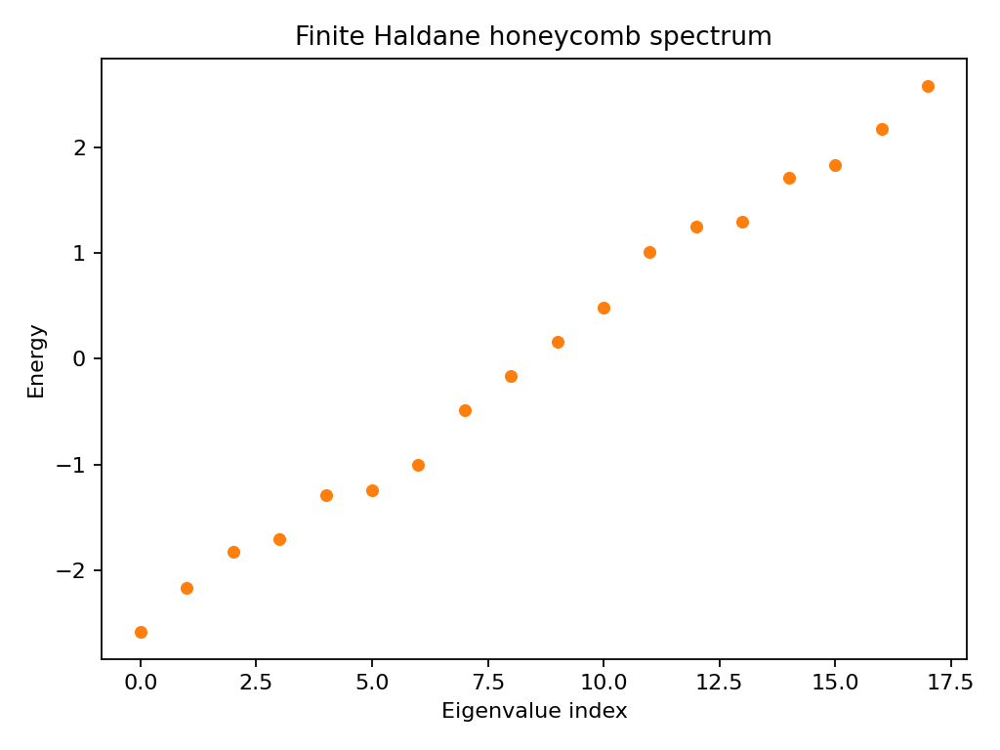
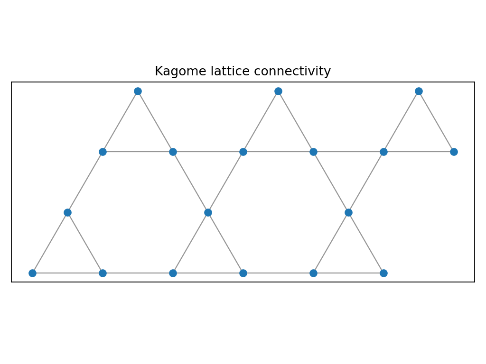
Executed notebooks
The notebooks are executed with saved outputs and exported to HTML
under docs/notebooks/. They include printed spectra,
parameter summaries, tables, and generated plots.
Ising variants and Heisenberg ladder spectra with gap sweeps.
notebooks/ising_spin_chains.ipynb
HTML
SSH/Rice-Mele edge localization and Kitaev BdG particle-hole symmetry.
notebooks/kitaev_bdg_symmetry.ipynb
HTML
Hofstadter flux sweep plus Haldane, triangular, and kagome graphs.
notebooks/hofstadter_flux_sweep.ipynb
HTML
Dense/sparse exact diagonalization and sparse scaling summaries.
notebooks/hubbard_exact_diagonalization.ipynb
HTML
Model registry table and command-line plot walkthrough.
notebooks/model_registry_and_cli.ipynb
HTML
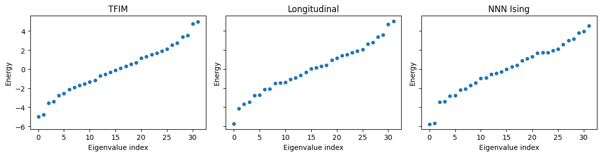
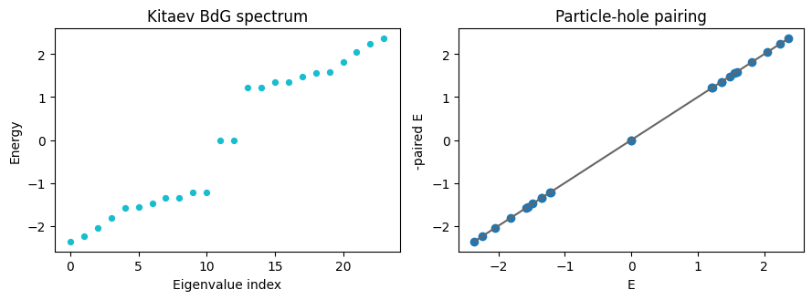
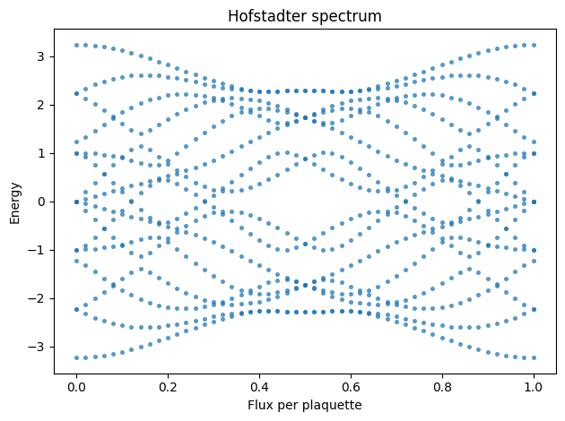
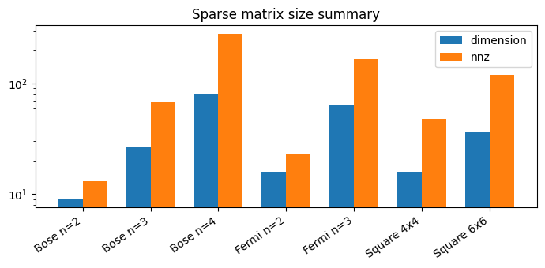
Documentation and source
The repository documents practical usage, model conventions, and the package's truth contract for small-system exact diagonalization. The notebook tree provides thin-client workflows for spin chains, SSH/Rice-Mele, Hofstadter sweeps, Hubbard models, and finite topological lattices.